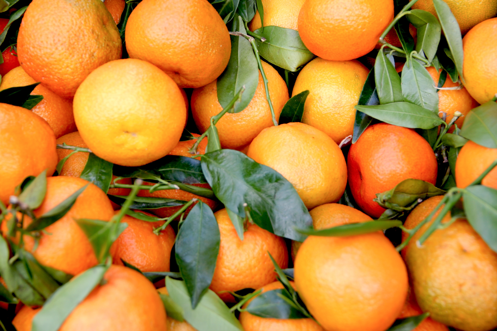

Apples
Genus: Malus
Identification Number : 6
Family: Rosaceae
Order: Rosales
Carbohydrates: 11.4
Protein: 0.3
Fat: 0.4
Calories: 52
Sugar: 10.3

Apricots
Genus: Prunus
Identification Number : 35
Family: Rosaceae
Order: Rosales
Carbohydrates: 3.9
Protein: 0.5
Fat: 0.1
Calories: 15
Sugar: 3.2
Avocados
Genus: Persea
Identification Number : 84
Family: Lauraceae
Order: Laurales
Carbohydrates: 8.53
Protein: 2
Fat: 14.66
Calories: 160
Sugar: 0.66
Bananas
Genus: Musa
Identification Number : 1
Family: Musaceae
Order: Zingiberales
Carbohydrates: 22
Protein: 1
Fat: 0.2
Calories: 96
Sugar: 17.2

Blackberries
Genus: Rubus
Identification Number : 64
Family: Rosaceae
Order: Rosales
Carbohydrates: 9
Protein: 1.3
Fat: 0.4
Calories: 40
Sugar: 4.5
Blueberries
Genus: Fragaria
Identification Number : 33
Family: Rosaceae
Order: Rosales
Carbohydrates: 5.5
Protein: 0.
Fat: 0.4
Calories: 29
Sugar: 5.4
Cherries
Genus: Prunus
Identification Number : 9
Family: Rosaceae
Order: None
Carbohydrates: 12
Protein: 11
Fat: 0.3
Calories: 50
Sugar: 8

Dragonfruit
Genus: Selenicereus
Identification Number : 80
Family: Cactaceae
Order: Caryophyllales
Carbohydrates: 9
Protein: 9
Fat: 1.5
Calories: 60
Sugar: 8

Durian
Genus: Durio
Identification Number : 60
Family: Malvaceae
Order: Malvales
Carbohydrates: 27.1
Protein: 1.5
Fat: 5.3
Calories: 147
Sugar: 6.75

Feijoas
Genus: Sellowiana
Identification Number : 76
Family: Myrtaceae
Order: Myrtoideae
Carbohydrates: 8
Protein: 0.6
Fat: 0.4
Calories: 44
Sugar: 3
Figs
Genus: Ficus
Identification Number : 68
Family: Moraceae
Order: Rosales
Carbohydrates: 19
Protein: 0.8
Fat: 0.3
Calories: 74
Sugar: 16
Gooseberries
Genus: Ribes
Identification Number : 69
Family: Grossulariaceae
Order: Saxifragales
Carbohydrates: 10
Protein: 0.9
Fat: 0.6
Calories: 44
Sugar: 0

Grapes
Genus: Vitis
Identification Number : 81
Family: Vitaceae
Order: Vitales
Carbohydrates: 18.1
Protein: 0.72
Fat: 0.16
Calories: 69
Sugar: 15.48

Green Apples
Genus: Malus
Identification Number : 72
Family: Rosaceae
Order: Rosales
Carbohydrates: 3.1
Protein: 0.4
Fat: 0.1
Calories: 21
Sugar: 6.4

Guava
Genus: Psidium
Identification Number : 37
Family: Myrtaceae
Order: Myrtales
Carbohydrates: 14
Protein: 2.6
Fat: 1
Calories: 68
Sugar: 9

Kiwis
Genus: Apteryx
Identification Number : 66
Family: Actinidiaceae
Order: Struthioniformes
Carbohydrates: 15
Protein: 1.1
Fat: 0.5
Calories: 61
Sugar: 9
Kiwifruit
Genus: Actinidia
Identification Number : 85
Family: Actinidiaceae
Order: Ericales
Carbohydrates: 14.6
Protein: 1.14
Fat: 0.5
Calories: 61
Sugar: 8.9

Lemons
Genus: Citrus
Identification Number : 26
Family: Rutaceae
Order: Sapindales
Carbohydrates: 9
Protein: 1.1
Fat: 0.3
Calories: 29
Sugar: 2.5
Limes
Genus: Citrus
Identification Number : 44
Family: Rutaceae
Order: Sapindales
Carbohydrates: 8.4
Protein: 0.3
Fat: 0.1
Calories: 25
Sugar: 1.7
Lingonberries
Genus: Vaccinium
Identification Number : 65
Family: Ericaceae
Order: Ericales
Carbohydrates: 11.3
Protein: 0.75
Fat: 0.34
Calories: 50
Sugar: 5.74
Lychee
Genus: Litchi
Identification Number : 67
Family: Sapindaceae
Order: Sapindales
Carbohydrates: 17
Protein: 0.8
Fat: 0.44
Calories: 66
Sugar: 15
Mangoes
Genus: Mangifera
Identification Number : 27
Family: Anacardiaceae
Order: Sapindales
Carbohydrates: 15
Protein: 0.82
Fat: 0.38
Calories: 60
Sugar: 13.7
Melons
Genus: Cucumis
Identification Number : 41
Family: Cucurbitaceae
Order: Cucurbitaceae
Carbohydrates: 8
Protein: 0
Fat: 0
Calories: 34
Sugar: 8

Morus
Genus: Morus
Identification Number : 82
Family: Moraceae
Order: Rosales
Carbohydrates: 9.8
Protein: 1.44
Fat: 0.39
Calories: 43
Sugar: 8.1
Oranges
Genus: Citrus
Identification Number : 2
Family: Rutaceae
Order: Sapindales
Carbohydrates: 8.3
Protein: 1
Fat: 0.2
Calories: 43
Sugar: 8.2

Papayas
Genus: Carica
Identification Number : 42
Family: Caricaceae
Order: Caricaceae
Carbohydrates: 11
Protein: 0
Fat: 0.4
Calories: 43
Sugar: 1
Passionfruit
Genus: Passiflora
Identification Number : 70
Family: Passifloraceae
Order: Malpighiales
Carbohydrates: 22.4
Protein: 2.2
Fat: 0.7
Calories: 97
Sugar: 11.2
Pears
Genus: Pyrus
Identification Number : 4
Family: Rosaceae
Order: Rosales
Carbohydrates: 15
Protein: 0.4
Fat: 0.1
Calories: 57
Sugar: 10

Persimmons
Genus: Diospyros
Identification Number : 52
Family: Ebenaceae
Order: Rosales
Carbohydrates: 18
Protein: 0
Fat: 0
Calories: 81
Sugar: 18

Pineapples
Genus: Ananas
Identification Number : 10
Family: Bromeliaceae
Order: Poales
Carbohydrates: 13.12
Protein: 0.54
Fat: 0.12
Calories: 50
Sugar: 9.85
Pitahayas
Genus: Cactaceae
Identification Number : 78
Family: Rosaceae
Order: Rosales
Carbohydrates: 7
Protein: 1
Fat: 0.4
Calories: 36
Sugar: 3

Plums
Genus: Prunus
Identification Number : 71
Family: Rosaceae
Order: Rosales
Carbohydrates: 11.4
Protein: 0.7
Fat: 0.28
Calories: 46
Sugar: 9.92
Pomegranate
Genus: Punica
Identification Number : 79
Family: Lythraceae
Order: Myrtales
Carbohydrates: 18.7
Protein: 1.7
Fat: 1.2
Calories: 83
Sugar: 13.7

Raspberries
Genus: Rubus
Identification Number : 23
Family: Rosaceae
Order: Rosales
Carbohydrates: 12
Protein: 1.2
Fat: 0.7
Calories: 53
Sugar: 4.4

Strawberries
Genus: Fragaria
Identification Number : 3
Family: Rosaceae
Order: Rosales
Carbohydrates: 5.5
Protein: 0.8
Fat: 0.4
Calories: 29
Sugar: 5.4

Tangerines
Genus: Citrus
Identification Number : 77
Family: Rutaceae
Order: Sapindales
Carbohydrates: 8.3
Protein: 0
Fat: 0.4
Calories: 45
Sugar: 9.1
Tomatoes
Genus: Solanum
Identification Number : 5
Family: Solanaceae
Order: Solanales
Carbohydrates: 3.9
Protein: 0.9
Fat: 0.2
Calories: 74
Sugar: 2.6

Watermelon
Genus: Citrullus
Identification Number : 25
Family: Cucurbitaceae
Order: Cucurbitales
Carbohydrates: 8
Protein: 0.6
Fat: 0.2
Calories: 30
Sugar: 6